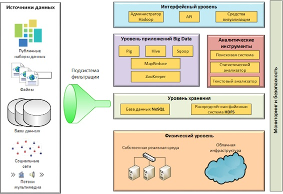
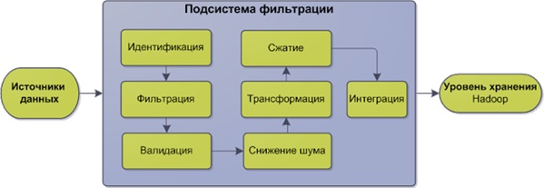

Понятие Big Data, архитектура, цели. Ландшафт Big Data. Принципы масштабирования распределенных систем.
Большие данные (англ. big data) информационных технологиях — серия подходов, инструментов и методов обработки структурированных и неструктурированных данных огромных объёмов и значительного многообразия для получения воспринимаемых человеком результатов, эффективных в условиях непрерывного прироста, распределения по многочисленным узлам вычислительной сети, сформировавшихся в конце 2000-х годов, альтернативных традиционным системам управления базами данных и решениям класса Business Intelligence. В данную серию включают средства массово-параллельной обработки неопределённо структурированных данных, прежде всего, решениями категории NoSQL, алгоритмами MapReduce, программными каркасами и библиотеками проекта Hadoop.
В качестве определяющих характеристик для больших данных отмечают «три V»: объём (англ. volume, в смысле величины физического объёма), скорость (англ. velocity в смыслах как скорости прироста, так и необходимости высокоскоростной обработки и получения результатов), многообразие (англ. variety, в смысле возможности одновременной обработки различных типов структурированных и полуструктурированных данных).
Методы анализа
Методы и техники анализа, применимые к большим данным, выделенные в отчёте McKinsey:
методы класса Data Mining: обучение ассоциативным правилам (англ. association rule learning), классификация (методы категоризации новых данных на основе принципов, ранее применённых к уже наличествующим данным), кластерный анализ, регрессионный анализ;
краудсорсинг — категоризация и обогащение данных силами широкого, неопределённого круга лиц, привлечённых на основании публичной оферты, без вступления в трудовые отношения;
смешение и интеграция данных (англ. data fusion and integration) — набор техник, позволяющих интегрировать разнородные данные из разнообразных источников для возможности глубинного анализа, в качестве примеров таких техник, составляющих этот класс методов приводятся цифровая обработка сигналов и обработка естественного языка (включая тональный анализ);
машинное обучение, включая обучение с учителем и без учителя, а также Ensemble learning (англ.) — использование моделей, построенных на базе статистического анализа или машинного обучения для получения комплексных прогнозов на основе базовых моделей (англ. constituent models, ср. состатистическим ансамблем в статистической механике);
искусственные нейронные сети, сетевой анализ, оптимизация, в том числе генетические алгоритмы;
распознавание образов;
прогнозная аналитика;
имитационное моделирование;
пространственный анализ (англ. Spatial analysis) — класс методов, использующих топологическую, геометрическую и географическую информацию в данных;
статистический анализ, в качестве примеров методов приводятся A/B-тестирование и анализ временных рядов;
визуализация аналитических данных — представление информации в виде рисунков, диаграмм, с использованием интерактивных возможностей и анимации как для получения результатов, так и для использования в качестве исходных данных для дальнейшего анализа.
Типовые архитектурные решения BigData для предприятий
Любое решение Big Data направлено на реализацию конкретной задачи и по–своему уникально. Однако вне зависимости от того, построено ли решение на бесплатных компонентах или на покупных технологиях, его архитектура будет выглядеть одинаково — примерно так:

Рисунок 1. Архитектура Big Data
Источники данных
Информация может попадать в систему хранения Big Data из различных внутренних и внешних источников. Источники могут различаться по типам, объёмам и скоростям предоставления данных. С помощью технологического стека Big Data поступающие данные консолидируются в большие наборы данных (big data sets), также называемые озёрами данных (data lakes).
Можно выделить две основные категории источников данных:
Старого поколения — к ним относятся традиционные виды стандартов и протоколов. Все они характеризуются достаточно высокой плотностью полезной информации, например:
HTTP веб-вервисы
Реляционные базы данных
Плоские файлы
XML
Нового поколения — это, как правило, «сырые» типы данных, получение и активное применение которых стало возможно лишь в последние 10 лет. В отличие от старого поколения данные нового поколения отличаются большим разнообразием, объёмом и скоростью поступления. В тоже время доля информации, на основе которой принимаются какие–либо решения, в данных нового поколения гораздо ниже и составляет обычно не более 10%. Примером данных нового поколения могут быть:
Данные, поступающие непрерывным потоком с различных устройств
Записи с колл–центров, в том числе полученные путём распознавания голоса
Данные с GPS устройств, которые требуют высокую скорость обработки
Сообщения и различного рода контент из социальных сетей
Подсистема фильтрации
Подсистема фильтрации, которая в англоязычной литературе именуется Ingestion Layer, служит вратами для огромного количества данных, попадающих в систему Big Data из различных источников. Основное назначение подсистемы фильтрации — отделить мусор от релевантной информации и, тем самым, подготовить данные для дальнейшей обработки внутри платформы Big Data.
Схема работы подсистемы фильтрации представлена на Рисунке 2.

Рисунок 2. Подсистема фильтрации
Обработка данных в подсистеме фильтрации предусматривает выполнение следующих процедур:
Идентификация известных форматов данных или назначение форматов по умолчанию для неструктурированных данных
Фильтрация входящей информации на предмет релевантности для данной организации. Релевантность оценивается на основании системы управления мастер данными (Master Data Management)
Валидация и анализ данных
Снижение шума включает очистку данных и минимизацию различных помех
Трансформация предусматривает при необходимости разбивку наборов данных на составляющие, сведение данных, денормализацию и суммирование
Сжатие данных уменьшает размер данных без потери результатов предшествующего анализа
Интеграция обеспечивает выгрузку отфильтрованной информации на уровень хранения Hadoop.
Уровень хранения
Технологии Big Data предусматривают высокую степень распределения данных на уровне хранения. Распределенная система хранения не только обеспечивает отказоустойчивость, но и позволяет распараллелить обработку данных, что крайне важно при работе с объёмами Big Data.
Ключевой технологией хранения в мире Big Data является Hadoop. Hadoop представляет собой программную среду с открытым исходным кодом, которая обеспечивает распределённое хранение огромных объёмов данных (в масштабе петабайт) на недорогих компьютерах. С помощью Hadoop приложения Big Data взаимодействует с узлами хранения без непосредственного обращения к физическим серверам.
Физический уровень
Физический уровень представляет собой инфраструктуру для работы уровня хранения. Инфраструктура Big Data масштабируется горизонтально, что с одной стороны обеспечивает высокую надежность, а с другой стороны — дешевизну относительно традиционных вертикально интегрированных решений.
Высокая степень горизонтальной интеграции предусматривает применение архитектуры без разделения ресурсов (share-nothing architecture), когда узлы не имеют общих ресурсов и не конфликтуют за них. В системах Big Data это достигается за счёт того, что данные и функции для управления ими находятся на одном узле.
Уровень приложений
Уровень приложений, который также называют уровнем платформы, регулирует доступ к данным и управляет запросами. Ключевой технологией на данном уровне является MapReduce.
MapReduce представляет собой технологию для пакетного выполнения процедур по обработке больших объёмов данных. В независимости от конкретной реализации типовое решение MapReduce работает так:
при поступлении запроса на обработку данных со стороны клиентского приложения функция Map разделяет исходные данные на куски и распределяет их по узлам системы с учётом требований к балансировке и отказоустойчивости
по мере завершения задач на узлах функция Reduce получает результат обработки с каждого куска и объединяет все результаты в один, который и возвращает клиентскому приложению.
На уровне приложений могут применяться следующие инструменты:
Hive представляет собой Хранилище данных, реализованное под Hadoop. Hive имеет sql–подобный интерфейс и может делать агрегацию для больших объёмов
Pig — это скриптовый язык программирования, с помощью которого можно разрабатывать задания для MapReduce более эффективным образом, чем на языке Java. Следует отметить, что Pig предназначен для обработки больших наборов данных и на малых объёмах от него не стоит ждать хороших результатов.
HBase представляет собой NoSQL СУБД, реализованную на основе столбцов. В отличие от аналогов HBase наиболее адаптирована для работы в Hadoop.
Sqoop — это инструмент на базе командной строки, который предназначен для переноса больших объёмов данных из неструктурированного хранилища, в структурированное (например, в реляционную СУБД).
ZooKeeper является координатором для различных экземпляров Hadoop. Он обеспечивает синхронизацию и защиту от сбоев для узлов системы.
Уровень мониторинга и информационной безопасности
Чтобы свести к минимуму время простоя для компонент Big Data и все системы в целом, необходима система мониторинга, реализованная по принципу автономности из своих компонент. Наибольшей популярностью в среде Big Data пользуются системы мониторинга с открытым кодом Ganglia и Nagios.
Что касается безопасности, то организация эффективной системы защиты в распределённой системе Big Data является гораздо более сложной задачей, чем в традиционных системах. Основная трудность заключается в отслеживании всей системы целиком, когда логи формируются на многих узлах, а формирование конечного результата происходит без всякой возможности проверки со стороны пользователя.
В качестве минимальных мер безопасности рекомендуется применять:
Проверку подлинности при обращении к узлам системы
Защищённую связь между узлами
Шифрование файлов в хранилище
Сервис доверенных сертификатов
Распределённое логирование на всех уровнях архитектуры
Проблемы и подходы к масштабированию распределенных систем хранения данных
Масштабируемость системы - её способность справляться с увеличением рабочей нагрузки при добавлении ресурсов.
Когда дело доходит до любой крупной распределенной системы, размер оказывается всего лишь одним пунктом из целого списка, который необходимо учитывать. Не менее важным являются усилия, направленные на увеличение пропускной способности для обработки больших объемов нагрузки, которая обычно и именуется масштабируемость системы. Масштабируемость может относиться к различным параметрам системы: количество дополнительного трафика, с которым она может справиться, насколько легко нарастить ёмкость запоминающего устройства, или насколько больше других транзакций может быть обработано.
Подходы к масштабированию:
Вертикальное масштабирование - увеличение производительности каждого компонента системы с целью повышения общей производительности. Масштабируемость в этом контексте означает возможность заменять в существующей системе компоненты более мощными и быстрыми по мере роста требований и развития технологий. Это самый простой способ масштабирования, так как не требует никаких изменений в прикладных программах, работающих на таких системах.
Горизонтальное масштабирование - разбиение системы на более мелкие структурные компоненты и разнесение их по отдельным физическим машинам (или их группам), и (или) увеличение количества серверов, параллельно выполняющих одну и ту же функцию. Масштабируемость в этом контексте означает возможность добавлять к системе новые узлы, серверы, процессоры для увеличения общей производительности. Этот способ масштабирования может требовать внесения изменений в программы, чтобы программы могли в полной мере пользоваться возросшим количеством ресурсов.
Масштабируемость системы может измеряться по трем различным показателям:
Масштабируемость по размеру. Масштабируемость по размеру определяет легкость подключения дополнительных пользователей и ресурсов. Проблема масштабируемости по размеру заключается в централизации служб, данных и алгоритмов;
Пространственная масштабируемость. Пространственная масштабируемость определяет легкость разнесения пользователей и ресурсов в пространстве. Проблема пространственной масштабируемости заключается в синхронизации процессов;
Административная масштабируемость. Административная масштабируемость определяет легкость в управлении множеством независимых компонент системы. Проблема административной масштабируемости заключается в безопасности доступа к ресурсам.
К сожалению, система, обладающая масштабируемостью по одному или нескольким из этих параметров, при масштабировании часто дает потерю производительности.
Технологии масштабирования:
Сокрытие времени ожидания связи при пространственном масштабировании. Основная идея проста: постараться по возможности избежать ожидания ответа на запрос от удаленного сервера.
Распределение. Распределение - это разбиение компонентов ресурсов на мелкие части с последующим разнесением этих частей по системе.
Репликация - создание копий ресурса его владельцем. Проблема репликации заключается в сохранении непротиворечивости копий ресурса. Выделяют два вида репликации: синхронную (данные всегда совпадают) и асинхронную (данные на копиях могут в течение какого-либо промежутка времени различаться) . Асинхронная репликация работает быстрее синхронной, однако при её использовании возникает проблема появления устаревших данных. Проблема строгой непротиворечивости состоит в том, что изменение в одной из копий должно немедленно распространяться на все остальные. Для обработки ситуаций такого типа обычно требуется механизм глобальной синхронизации. К сожалению, реализовать масштабирование подобных механизмов крайне трудно, а может быть и невозможно. Это означает, что масштабирование путем репликации может включать в себя отдельные не масштабируемые решения.
Видео материалы